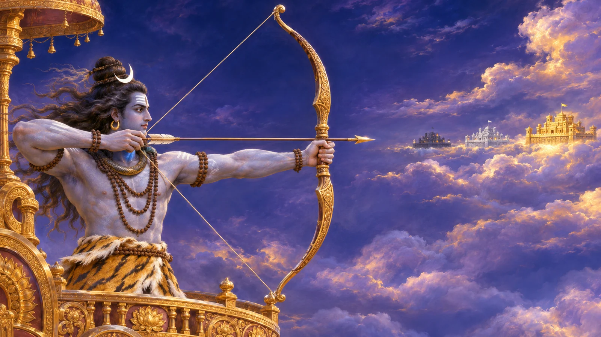

02 · कार्तिक पूर्णिमा · वाराणसी
शिव और त्रिपुर की तीन नगरियाँ
शिव पुराण की रुद्र संहिता, युद्ध खंड से एक पौराणिक कथा।
तीन नगरियों का वरदान
तीन भाइयों को एक अद्भुत वर मिलने वाला था, पर वह नहीं जो उन्होंने पहले माँगा था। तारक के पुत्र तारकाक्ष, विद्युन्माली और कमलाक्ष ने कठोर तप किया। ब्रह्मा प्रकट हुए तो उन्होंने मृत्यु से मुक्ति माँगी। ब्रह्मा ने यह वर देने से मना किया और उनसे कोई दूसरा वर चुनने को कहा।
तब उन्होंने तीन दुर्गम नगरियाँ माँगीं। मय ने उन्हें सोने, चाँदी और लोहे से बनाया। उनके विनाश की शर्त असाधारण थी—तीनों नगरियाँ एक साथ आएँ और शिव का एक ही बाण उन्हें भेदे। उन नगरियों में जीवन समृद्ध था। बाग़, सरोवर और मंदिर थे; वहाँ के निवासी शिव की उपासना करते थे। वरदान और नगरियाँ
शिव ने तुरंत आक्रमण क्यों नहीं किया?
त्रिपुर की शक्ति से व्यथित देवताओं ने शिव से सहायता माँगी। फिर भी शिव ने तुरंत शस्त्र नहीं उठाया। वहाँ के शासक उनके भक्त थे और पुण्यकर्म करते थे। जब तक उनकी भक्ति बनी हुई थी, शिव जानबूझकर उन्हें हानि नहीं पहुँचाना चाहते थे। उनकी रक्षा केवल दुर्ग की ऊँची दीवारों से नहीं हो रही थी। देवताओं की प्रार्थना · शिव का उत्तर
इसके बाद कथा में दिव्य माया का प्रसंग आता है। विष्णु ने एक उपदेशक की रचना की, जिसने नारद की सहायता से भाइयों और नगरवासियों को उनकी पहले की उपासना से दूर कर दिया। जब उन्होंने शिवपूजा और सदाचरण छोड़ दिया, तब देवता फिर शिव की शरण में आए। कथा का मोड़ · फिर से की गई प्रार्थना
एक बाण का निर्णायक क्षण
एक दिव्य रथ तैयार हुआ और ब्रह्मा उसके सारथी बने। शिव उस पर सवार होकर नगरियों की ओर चले। पुराण इस अभियान को ब्रह्मांडीय रूप देता है—वेद ही उस रथ को खींचने वाले घोड़े बनते हैं। शिव का अभियान

पर निर्णायक क्षण अभी नहीं आया था। तीनों नगरियाँ अलग-अलग थीं। शिव ने गणेश का सम्मान किया; तब वे एक साथ आ गईं। शिव ने धनुष खींचा और तेजस्वी बाण छोड़ दिया। तीनों दुर्ग भस्म हो गए। इसी विजय से वे त्रिपुरांतक, यानी त्रिपुर का अंत करने वाले, और त्रिपुरारी कहलाते हैं। त्रिपुर का अंत
त्रिपुरारी पूर्णिमा पर दीप और प्रार्थना इस विजय की स्मृति बनते हैं। प्रकाश के इस अर्पण में पौराणिक कथा और काशी की जीवंत परंपरा एक-दूसरे से जुड़ती हैं। पर्व का संबंध